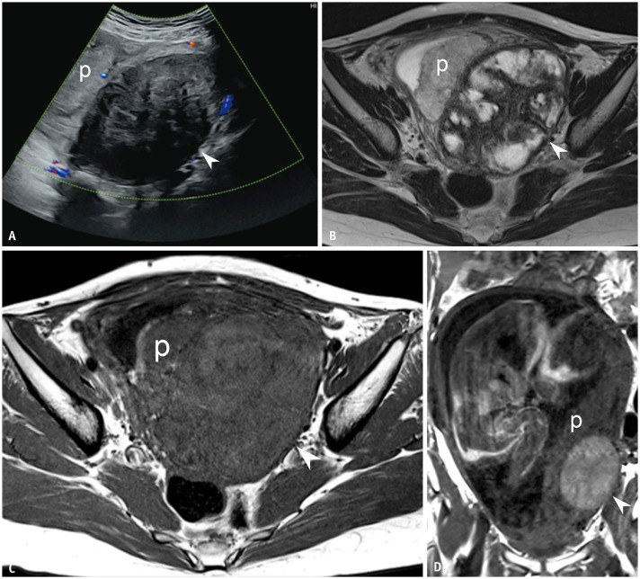
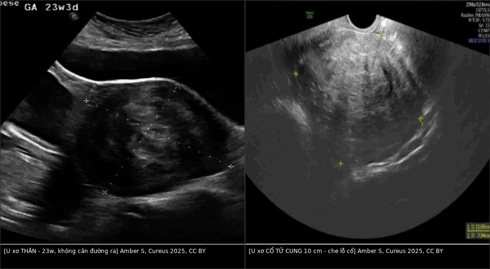
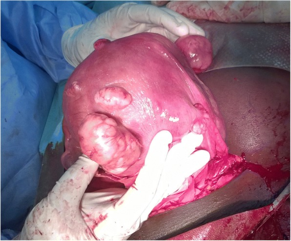
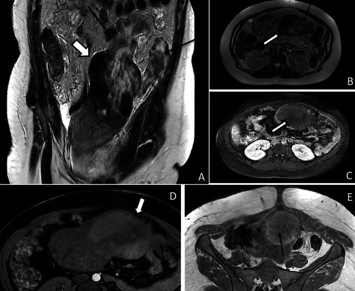
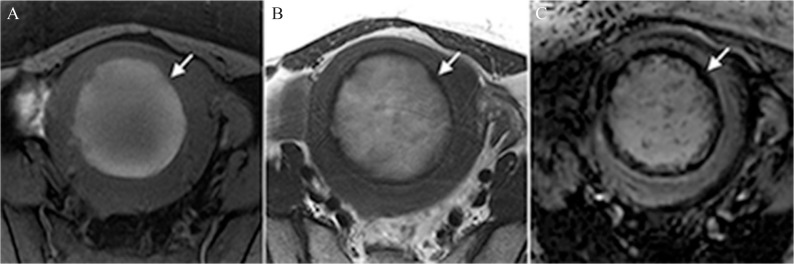
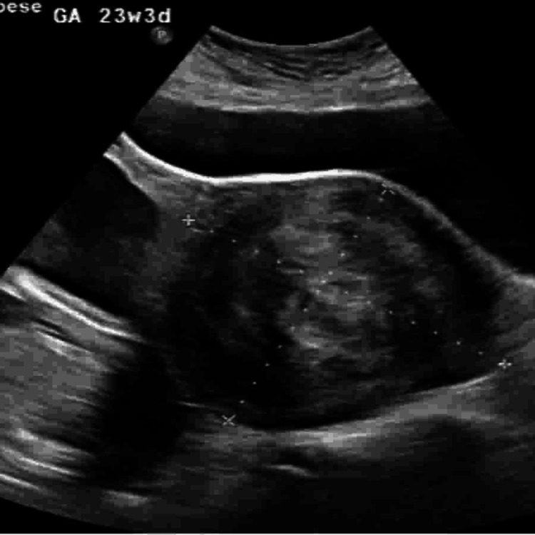
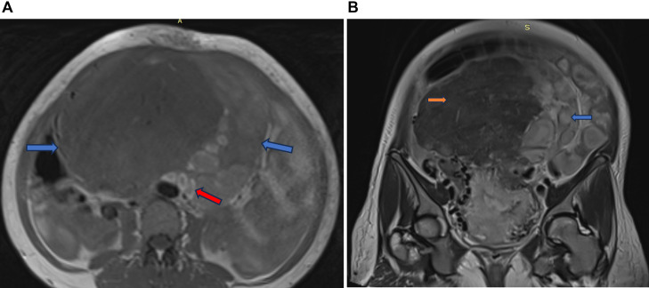
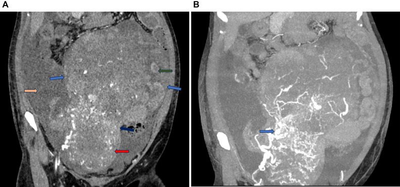

532 — U xơ tử cung trong THAI KỲ & thoái triển đỏ (red degeneration) / Uterine fibroids in pregnancy & red (carneous) degeneration
Tags: pattern:khoi-co-tu-cung pattern:thoai-trien-do vung:tu-cung vung:tieu-khung protocol:MRI-thai-khong-gadolinium protocol:sieu-am-san-khoa
Mức chắc chắn (certainty): tổng hợp y văn (literature synthesis) — nhóm tự biên từ tổng quan Uterine fibroids and pregnancy (Ramasauskaite 2026, PMC12724024, CC BY), bài tổng quan hình ảnh thai kỳ (Masselli 2023, PMC10528125, CC BY; Ahn 2025, PMC12235540, CC BY-NC), nghiên cứu MRI–mô bệnh thoái triển đỏ (Takeuchi 2019, PMC6460131; Nakai 2017, PMC5486831) và các ca nguyên văn có ảnh CC BY/CC BY-NC-ND. Số liệu đối chiếu từng bài gốc; chỗ chưa kiểm chứng ghi rõ "chưa rõ".
1. Tổng quan bệnh học – cơ chế hình ảnh
- Dịch tễ: u xơ gặp ở 1,6–10,7% thai kỳ (Ramasauskaite 2026, PMC12724024); tỉ lệ tăng theo tuổi mẹ — 12% ở 19–25 tuổi → 32% ở 35–42 tuổi; cao nhất ở nữ da đen không gốc Tây Ban Nha (14% so với 9% da trắng, 6% Hispanic, 10% châu Á/Thái Bình Dương). Trong dân số chung, u xơ gặp ở 20–40% phụ nữ tuổi sinh sản (Ahn 2025, PMC12235540).
- U xơ thay đổi thế nào trong thai: 71,4% u xơ tăng kích thước từ tam cá nguyệt 1 sang tam cá nguyệt 2; khoảng 30% u tăng thể tích do hormone; sau sinh > 50% giảm thể tích ở 70% người sinh sống trong 3–6 tháng (Ramasauskaite 2026) — nghĩa là kích thước đo được không phải tiêu chuẩn để mổ.
- Vì sao u xơ gây biến chứng sản khoa (cơ chế cơ học): khối choán chỗ làm biến dạng lòng tử cung (tăng sảy thai, thai lệch), cản đường ra (u cổ tử cung/lower segment → mổ lấy thai), ngăn cơ tử cung co đều (băng huyết sau sinh), chéo bánh nhau (u sau bánh nhau/dưới niêm mạc → bong nhau, thai chậm tăng trưởng) — mỗi vị trí FIGO có một hệ quả riêng, không phải "u to = nguy hiểm".
- Các kiểu thoái triển: kính (hyaline) — phổ biến nhất, không triệu chứng; nang (cystic); niêm (myxoid); vôi hóa (calcific); mỡ (fatty); đỏ/carneous (red degeneration); và rất hiếm ác tính hóa (leiomyosarcoma). Chỉ thoái triển đỏ và torsion/vỡ mới gây đau cấp điển hình.
- Thoái triển đỏ = nhồi máu xuất huyết (hemorrhagic infarction) của u xơ do huyết khối tĩnh mạch ngoại vi (Takeuchi 2019, PMC6460131). Gặp ở ~8% u xơ và là biến chứng thường gặp nhất trong thai kỳ (8% thai phụ có u xơ), hay ở tam cá nguyệt 2–3 khi u lớn nhanh (Ramasauskaite 2026; Mukherjee 2026, PMC12889335).
- Triệu chứng: đau khu trú, đột ngột trên u, sốt nhẹ, buồn nôn/nôn, đau khi ấn điểm u, tăng bạch cầu; đau thường tự giới hạn 1–2 tuần rồi giảm dần (Ramasauskaite 2026). Đây là chẩn đoán loại trừ: phải loại torsion, vỡ u, sỏi niệu quản, viêm ruột thừa, bong nhau.
- TẠI SAO hình ảnh trông như vậy — vật lý sản phẩm máu (bắt buộc hiểu, không học vẹt):
- Nhồi máu xuất huyết → hồng cầu vỡ, Hb thoát ra mô. Trình tự biến đổi quyết định tín hiệu: deoxyhemoglobin (rất sớm) → methemoglobin nội bào (bán cấp sớm) → methemoglobin ngoại bào (bán cấp muộn) → hemosiderin (mạn).
- T1W: methemoglobin thuận từ (paramagnetic) làm T1 rút ngắn → tăng tín hiệu. Vì vậy viền tăng tín hiệu T1 (hoặc toàn khối tăng) xuất hiện khi đã có methemoglobin; ở giai đoạn rất cấp (deoxyHb chưa chuyển) T1 có thể chưa tăng — đây là lý do không thể loại trừ thoái triển đỏ khi T1 bình thường (Takeuchi 2019).
- T2W: deoxyhemoglobin, methemoglobin nội bào và hemosiderin đều gây T2* shortening → viền tối T2; nếu còn phù/nhồi máu nhiều, phần giữa có thể tăng T2.
- SWI/T2* (susceptibility-weighted): nhạy nhất với sản phẩm máu → viền tối rõ hơn T2, và đốm tối trong khối (vi huyết khối/hemosiderin).
- Số liệu chốt (15 u xơ thoái triển đỏ, Takeuchi 2019, PMC6460131): viền tăng T1: 7/15 = 47% (8 ca còn lại tăng tín hiệu toàn khối 53%); viền tối T2: 7/15 = 47%; viền tối trên SWI/SWAN: 15/15 = 100%; đốm/mảng tối trong u: 13/15 = 87%. Mô bệnh tương ứng: hoại tử đông (coagulative necrosis) 15/15, kính hóa 14/15, hemosiderin 11/15.
- Vì sao viền lại ở ngoại vi: huyết khối nằm ở tĩnh mạch ngoại vi của u → sản phẩm máu tập trung ở vành trước, sau đó lan vào trong. Viền cũng giải thích không ngấm thuốc toàn bộ ở thì muộn (Masselli 2023).
- Ngưỡng định lượng cần nhớ: tỉ lệ có thai 1,6–10,7%; thoái triển đỏ 8% u xơ; tăng kích thước 71,4% (T1→T2); giảm > 50% sau sinh ở 70%; T1 47% / T2 47% / SWI 100%; u > 5 cm → sinh sớm hơn; u > 10 cm → ngôi bất thường; thể tích u > 200 mL (≈ 7–8 cm) hoặc u dưới niêm mạc/sau bánh nhau → bong nhau; u cổ tử cung/lower segment → mổ lấy thai 86% so với u thân 42% (Ramasauskaite 2026; Masselli 2023).

Nữ 31 tuổi, thai 20 tuần, đau bụng. (A) Siêu âm: u dưới thanh mạc trái, không có mạch; (B) T2: khối hỗn hợp đặc–nang; (C) T1 20 tuần: u còn đồng tín hiệu, chưa tăng; (D) T1 30 tuần sau điều trị bảo tồn: u đã tăng tín hiệu — minh họa "T1 âm tính sớm" của thoái triển đỏ. Nguồn: Ahn H et al., Korean J Radiol 2025 (PMC12235540), CC BY-NC — giữ nguyên bản.2. Mẫu hình + chẩn đoán phân biệt theo vị trí (gamut)
- Mẫu hình cần nhận ra trên siêu âm: khối giảm âm, bờ rõ, có bóng lưng (posterior acoustic shadowing), nằm trong cơ tử cung, không có tín hiệu Doppler trung tâm khi thoái triển; bên cạnh là bánh nhau và thai — luôn đo 3 chiều + ghi vị trí theo FIGO.
- Gamut theo VỊ TRÍ (quyết định biến chứng, không chỉ kích thước):
- Dưới niêm mạc (FIGO 0–2): sảy thai, chảy máu, thai lệch, cản đường ra; dễ sa ra/sinh qua đường âm đạo.
- Trong cơ (FIGO 3–4): thường dung nạp; nếu lớn > 5 cm → sinh non, ngôi bất thường; sau bánh nhau → bong nhau.
- Dưới thanh mạc/có cuống (FIGO 5–7): xoắn cuống (torsion) → đau cấp + nôn, giống thoái triển đỏ; vỡ (hiếm) → máu ổ bụng.
- Cổ tử cung/lower segment (FIGO 8): che lỗ cổ, cản đường ra → mổ lấy thai; dễ sa polyp/u xơ ra âm đạo; có thể gây bí tiểu, ứ nước thận.
- Gamut theo BỐI CẢNH ĐAU CẤP:
- Trong thai: thoái triển đỏ (hay nhất), xoắn u có cuống, vỡ u, xoắn tử cung (uterine torsion) — cực hiếm nhưng mô phỏng thoái triển đỏ; bong nhau, vỡ tử cung sau mổ lấy thai/mổ u, viêm ruột thừa, sỏi niệu quản, xoắn buồng trứng.
- Sau sinh: thoái triển đỏ, sót nhau (RPOC), viêm nội mạc tử cung, huyết khối tĩnh mạch buồng trứng (OVT), đảo ngược tử cung (bài 553), vỡ tử cung.
- Gamut "khối tiểu khung sau sinh" nhìn giống u ác: u xơ thoái triển dạng nang/nhầy + dịch ổ bụng + CA-125/β-hCG tăng → dễ bị gọi là ung thư buồng trứng; dấu hiệu gỡ: cuống mạch nối với tử cung ("bridging vessels"), T1 tăng do máu cũ, bờ rõ (Mukherjee 2026, PMC12889335).
- Ba câu hỏi gỡ rối mọi "u xơ + đau": (1) đau có khu trú đúng u không? (2) u có cuống/xoắn không? (3) có dấu hiệu máu cấp trong u hay máu ổ bụng? — trả lời bằng siêu âm Doppler + MRI.
3. Bảng so sánh phân biệt (ma trận đối chiếu)
| Thực thể (entity) | Hình ảnh điển hình (US/CT/MRI) | Chốt vào (rule-in) | Chốt loại (rule-out) | Gợi ý xác nhận |
|---|---|---|---|---|
| Thoái triển đỏ (bài này) | US: khối giảm âm, không tín hiệu trung tâm; MRI: viền tăng T1 hoặc tăng T1 toàn khối, viền tối T2, viền tối + đốm tối trên SWI, không ngấm thuốc | Đau khu trú + sốt nhẹ + bạch cầu tăng + viền tăng T1/tối SWI quanh u | Không có sản phẩm máu (T1 bình thường, SWI không tối) + có cuống xoắn → nghĩ torsion; máu ổ bụng → nghĩ vỡ | MRI có T1 fat-sat + SWI; theo dõi 1–2 tuần thấy đỡ |
| Xoắn u có cuống (torsion) | US: khối ngoài tử cung/trên cuống, Doppler cuống mất tín hiệu, dấu "xoáy" (whirl); MRI: cuống xoắn, u không ngấm | Đau + nôn dữ dội, u có cuống, mất mạch nuôi trên Doppler | Có viền tăng T1 lan tỏa trong u + vị trí trong cơ → thoái triển đỏ | So sánh Doppler hai lần; mổ nội soi khi nghi xoắn |
| Vỡ u / chảy máu trong u | Máu ổ bụng, dịch tự do, u mất liên tục vỏ, MRI T2 thấy lỗ thủng + mô hoại tử thoát ra | Máu ổ bụng + khuyết vỏ u + mô hoại tử ngoài u | Không có dịch tự do, vỏ u liên tục → không vỡ | CT/MRI khẩn; mổ cấp |
| U xơ không thoái triển | Giảm âm đều, bóng lưng, giảm tín hiệu T2 đồng nhất, không phù, không viền | T2 tối đều + không phù + không đau khu trú | Viền tăng T1 + phù quanh u → có thoái triển | Siêu âm lặp sau 2–4 tuần |
| Sarcoma tử cung | Khối tăng sinh mạch mạnh, hoại tử không đều, hạn chế khuếch tán, không phải T2 tối đều; tăng nhanh sau mãn kinh | T2 trung gian–tăng, DWI sáng, ngấm thuốc mạnh, hoại tử | T2 tối đen đồng nhất + vôi hóa + không ngấm → nghĩ u xơ lành | MRI ± sinh thiết; không dựa "tăng nhanh" đơn thuần |
| Ung thư buồng trứng (giả u xơ sau sinh) | Khối nang nhiều vách, dịch ổ bụng, CA-125/β-hCG tăng, buồng trứng không tách được | Cuống mạch nối tử cung + T1 tăng do máu cũ + bờ rõ (hướng u xơ) | Bờ mờ xâm lấn + nốt phúc mạc + không thấy cuống → nghi ác thật | MRI; tránh cắt buồng trứng khi chưa có mô bệnh |
| Bong nhau / vỡ tử cung | Máu sau bánh nhau, bánh nhau dày bất thường, mất liên tục cơ tử cung, thai ngoài buồng | Máu sau bánh nhau + cơn co + thai suy | Bánh nhau bình thường, cơ liên tục → không bong/vỡ | Siêu âm cấp + CT khi huyết động không ổn |

Trái: u xơ thân tử cung 11,8 × 10,6 cm ở 23 tuần 3 ngày — không cản đường ra, theo dõi được. Phải: u xơ cổ tử cung 10,09 × 7,94 cm — che lỗ cổ ngoài, làm mờ lỗ cổ, buộc mổ lấy thai. Cùng phương thức siêu âm. Nguồn: Amber S et al., Cureus 2025 (PMC12334970), CC BY 4.0. Ảnh ghép letterbox, giữ nguyên tỷ lệ.Dấu hiệu đọc chuẩn xác (đừng nhầm "tăng tín hiệu" với "ác tính")
- Viền tăng T1 là dấu hiệu đặc hiệu nhất trên MRI thường quy, nhưng chỉ 47% — thiếu viền không loại trừ thoái triển đỏ (Takeuchi 2019).
- SWI/SWAN phát hiện viền tối ở 100% ca trong nghiên cứu 15 u — nếu có chuỗi này, hãy dùng; nhưng không phải cơ sở để chẩn đoán ác/lành (hemosiderin cũng gặp sau chảy máu).
- T1 tăng không đồng nghĩa thoái triển đỏ: mỡ (u mỡ, u quái), endometrioma, nang xuất huyết, sắc tố mật — cần T1 fat-sat để loại mỡ.
- Không ngấm thuốc ở vùng nhồi máu giúp phân biệt với sarcoma hoại tử (sarcoma còn phần ngấm mạnh, không đều); nhưng thai kỳ thường không tiêm gadolinium → dựa vào T1/T2/SWI.

Trong mổ: u xơ dưới thanh mạc thành trước đang thoái triển đỏ (màu đỏ nâu, mềm, ranh giới mờ) và u dưới thanh mạc thành sau. Đại thể "thịt đỏ" (carneous) là tương ứng của hình ảnh T1 tăng/T2 tối. Nguồn: Dohbit JS et al., BMC Pregnancy Childbirth 2019 (PMC6323858), CC BY 4.0.4. Protocol chụp + phân tầng xử trí
- Siêu âm (đầu tay, mọi thai phụ): đánh giá số lượng, kích thước 3 chiều, vị trí FIGO, liên quan bánh nhau/lỗ cổ, Doppler màu tìm mất tín hiệu trung tâm khi nghi thoái triển; đo lại mỗi tháng nếu u lớn (Ramasauskaite 2026) — vì thay đổi kích thước làm đổi nguy cơ.
- MRI tiểu khung khi siêu âm không kết luận hoặc nghi xoắn/vỡ/ác: T2W sagittal + axial, T1W fat-sat (bắt buộc — để thấy methemoglobin), DWI/ADC, ± SWI/T2*; không gadolinium trừ khi thật cần (Masselli 2023 ghi rõ "contrast is generally not administered during pregnancy"). Không dùng CT trừ khi có chỉ định cấp cứu không thay thế được (ALARA).
- Thuốc giảm đau: paracetamol là nền; NSAID tránh sau 30 tuần, từ 20–30 tuần chỉ dùng liều thấp nhất, thời gian ngắn nhất (FDA — nguy cơ đóng sớm ống động mạch, thiểu ối, hoại tử ruột, tăng áp phổi) (Ramasauskaite 2026); opioid ngắn ngày khi đau nhiều.
- Chỉ định can thiệp trong thai (myomectomy): hạn chế tối đa — chỉ khi xoắn cuống, vỡ, chèn ép/bí tiểu, đau không kiểm soát; 78,4% ca mổ u trong thai là mở bụng; nguy cơ sảy thai/sinh non tăng khi u dưới niêm mạc, sau, nhiều u (Ramasauskaite 2026).
- Sau mổ u xơ — tư vấn sinh: nguy cơ vỡ tử cung sau mổ u xơ 0,93% (95% CI 0,45–1,92%), không cao hơn nhiều so với sinh thường sau mổ lấy thai; nhưng mổ u xơ rộng/rách cơ nhiều → mổ lấy thai chủ động trước chuyển dạ; các trường hợp mổ ít, không biến chứng → xử trí như sẹo mổ lấy thai.
- Phân tầng nguy cơ (số liệu để tư vấn): sinh non OR 1,5; mổ lấy thai OR 2,09; băng huyết sau sinh OR 1,8; u > 5 cm → sinh sớm hơn; u cổ/lower segment → mổ lấy thai 86%; u > 10 cm → ngôi bất thường; u sau bánh nhau/dưới niêm mạc/thể tích > 200 mL → bong nhau (Ramasauskaite 2026).
flowchart TD
A[Thai phụ đau bụng cấp + có u xơ] --> B[Siêu âm: vị trí, kích thước, Doppler, bánh nhau, dịch tự do]
B --> C{Có máu ổ bụng / u mất liên tục vỏ / thai suy?}
C -->|Có| D[Mổ cấp: vỡ u, xoắn, bong nhau, vỡ tử cung]
C -->|Không| E{Đau khu trú đúng u + sốt nhẹ + bạch cầu tăng?}
E -->|Có| F[Nghi THOÁI TRIỂN ĐỎ: điều trị giảm đau, theo dõi 1-2 tuần]
E -->|Không| G[MRI: T2 + T1 fat-sat + DWI ± SWI]
G --> H{Có viền tăng T1 hoặc viền tối SWI quanh u?}
H -->|Có| F
H -->|Không| I{Cuống xoắn / khối hoại tử ngấm không đều?}
I -->|Có| J[Xoắn u hoặc nghi sarcoma: hội chẩn, can thiệp]
I -->|Không| K[Loại trừ sản khoa và ngoại khoa khác: bong nhau, appendicitis, sỏi niệu quản, xoắn buồng trứng]
F --> L{Đau giảm sau 1-2 tuần?}
L -->|Có| M[Tiếp tục theo dõi thai, siêu âm mỗi tháng]
L -->|Không| N[Xem lại chẩn đoán: MRI, cân nhắc mổ u nếu chèn ép/xoắn]
5. Biến thể bình thường và cạm bẫy
- Cạm bẫy 1 — "T1 bình thường nên không phải thoái triển đỏ": ở giai đoạn rất cấp, deoxyhemoglobin chưa chuyển thành methemoglobin → T1 chưa tăng; nhưng T2* đã có thể tối. Đau điển hình + u xơ + T2 tối viền vẫn đủ để theo dõi (Takeuchi 2019).
- Cạm bẫy 2 — "Khối sau sinh + CA-125 tăng = ung thư buồng trứng": ca nguyên văn cho thấy u xơ thoái triển đỏ dạng nang sau sinh bị chẩn đoán dysgerminoma vì CA-125 và β-hCG tăng + khối nhiều vách; chỉ mô bệnh sau mổ mới xác định (Mukherjee 2026, PMC12889335). CA-125 tăng trong hậu sản do viêm phúc mạc nhẹ/tiêu nội mạc, không đặc hiệu.
- Cạm bẫy 3 — "U xơ + đau = thoái triển đỏ" bỏ sót xoắn tử cung: ca u xơ 16,9 cm + xoắn tử cung 180° được chẩn đoán ban đầu là "u xơ thoái triển", chỉ CRP 245 mg/L và mổ mới phát hiện; siêu âm còn định vị sai bên u do biến dạng giải phẫu (Samanta 2025, PMC12315048).
- Cạm bẫy 4 — bỏ sót vỡ u: u dưới thanh mạc thoái triển có thể vỡ vào ổ bụng, gây máu ổ bụng + mô hoại tử; MRI T2 thấy lỗ thủng 4 cm và mô thoát ra (Azouz 2025, PMC11730542) — đây là chỉ định mổ cấp, không theo dõi.

(A) T2 coronal: u dưới thanh mạc ở đáy tử cung (mũi tên dày) với lỗ thủng 4 cm, mô hoại tử không đồng nhất thoát ra (mũi tên mảnh); (B) T2 axial: u nhồi máu, mô hoại tử rời bờ trên–trái; (C) T1 sau tiêm: u không ngấm; (D, E) T1 fat-sat: u tăng tín hiệu lan tỏa — thoái triển đỏ. Nguồn: Azouz E et al., Radiol Case Rep 2025 (PMC11730542), CC BY-NC-ND — giữ nguyên bản.- Cạm bẫy 5 — u cổ tử cung "nhỏ nhưng chết người": u 10 cm ở cổ che lỗ cổ, không cản trở thai lớn nhưng cản đường ra; nếu chỉ đo kích thước mà bỏ vị trí → thử sinh thất bại, mổ cấp.
- Cạm bẫy 6 — thoái triển đỏ "tự khỏi" không cần mổ, nhưng đừng nhầm với sarcoma: sarcoma cũng có thể đau + lớn nhanh; khác biệt là T2 trung gian/tăng, DWI sáng, ngấm mạnh, hoại tử không đều — không có "viền tăng T1" đơn thuần. Tăng trưởng nhanh không đủ để chẩn đoán sarcoma.
- Biến thể bình thường dễ nhầm: u xơ vôi hóa (T2 tối đều + bóng lưng mạnh) không phải thoái triển; u xơ đỏ ở người không mang thai vẫn gặp (thường do uống thuốc tránh thai/giảm cân nhanh); tử cung co cứng (contraction ring) trên MRI có thể giả "khối" — xem lại T2 và bờ.
- Satisfaction of search: thấy u xơ to rồi dừng → bỏ bong nhau, vỡ tử cung, xoắn buồng trứng đi kèm. Luôn đọc bánh nhau + dịch ổ bụng + buồng trứng trước khi kết luận.

Nữ 45 tuổi, u xơ thoái triển đỏ. (A) T1 fat-sat: viền tăng tín hiệu quanh khối giảm/tăng nhẹ; (B) T2: khối tăng tín hiệu với viền tối; (C) SWI: viền tối rõ hơn T2 + đốm tối trong khối (hemosiderin/vi huyết khối). Nguồn: Takeuchi M et al., Magn Reson Med Sci 2019 (PMC6460131), CC BY-NC-ND — giữ nguyên bản.6. Tự lượng giá — Blind Quiz ngay trên trang tĩnh
Ca 1 — Thai 23 tuần 3 ngày, đau bụng âm ỉ, không sốt. Nhìn ảnh, mô tả trước.

- Gợi ý lâm sàng: thai 23 tuần 3 ngày, khối lớn thành trước tử cung đã biết từ tam cá nguyệt 1; đau tăng khi thay đổi tư thế, không ra máu.
- Câu hỏi: (A) Khối nằm ở đâu, kích thước? (B) Có cần mổ ngay không? (C) Theo dõi gì ở các lần sau?
Bấm để hiện đáp án (findings + chẩn đoán)
- Dấu hiệu (findings): khối giảm âm, bờ rõ, kích thước ~11,8 × 10,6 cm, thành trước tử cung, không cản đường ra; thai và bánh nhau bình thường.
- Chẩn đoán (diagnosis): u xơ thân tử cung (FIGO 3–4) trong thai kỳ — không phải thoái triển đỏ cấp (không sốt, không tăng bạch cầu, Doppler không mất tín hiệu trung tâm). Theo dõi + giảm đau, không mổ; siêu âm mỗi tháng vì u có thể tăng (71,4% tăng T1→T2).
- Nguồn ảnh: Amber S et al., Cureus 2025, PMC12334970, Fig. 3, CC BY 4.0.
Ca 2 — Nữ 45 tuổi, đau bụng dưới cấp, sốt nhẹ. Nhìn 3 chuỗi MRI, mô tả trước.
- Gợi ý lâm sàng: nữ 45 tuổi, u xơ đã biết, đau khu trú, CRP/bạch cầu tăng nhẹ.
- Câu hỏi: (A) Dấu hiệu nào xuất hiện ở cả 3 chuỗi? (B) Vì sao T1 tăng mà T2 lại tối? (C) Chuỗi nào nhạy nhất và tại sao?
Bấm để hiện đáp án (findings + chẩn đoán)
- Dấu hiệu: viền tăng tín hiệu trên T1 fat-sat (A), viền tối trên T2 (B), viền tối rộng hơn + đốm tối trên SWI (C) — tất cả quanh cùng một khối cơ tử cung.
- Chẩn đoán: thoái triển đỏ (hemorrhagic infarction) do huyết khối tĩnh mạch ngoại vi. T1 tăng vì methemoglobin (thuận từ, rút ngắn T1); T2 tối vì methemoglobin nội bào/deoxyhemoglobin/hemosiderin gây T2* shortening; SWI nhạy nhất với sản phẩm máu nên thấy 100% (15/15 ca), trong khi T1 chỉ 47%.
- Bài học: thiếu viền T1 không loại trừ; nếu có SWI, viền tối là dấu hiệu mạnh nhất.
- Nguồn ảnh: Takeuchi M et al., Magn Reson Med Sci 2019, PMC6460131, Fig. 1, CC BY-NC-ND.
Ca 3 — Sản phụ 5 ngày sau sinh, khối bụng lớn, CA-125 và β-hCG tăng. Nhìn MRI T1, mô tả trước.

- Gợi ý lâm sàng: 5 ngày sau sinh, khối bụng–chậu lớn, siêu âm/CT không tách được khối với tử cung; CA-125 và β-hCG tăng.
- Câu hỏi: (A) Dấu hiệu nào trên T1 gợi u xơ chứ không phải ung thư buồng trứng? (B) Có nên cắt buồng trứng ngay? (C) Điều gì giải thích CA-125 tăng?
Bấm để hiện đáp án (findings + chẩn đoán)
- Dấu hiệu: khối T1 trung gian, cấu trúc ống tăng tín hiệu T1 ở ngoại vi (tĩnh mạch huyết khối), bờ rõ, không có nốt phúc mạc; trên CT thấy cuống mạch nối với tử cung (dấu "bridging vessels").
- Chẩn đoán: u xơ thoái triển đỏ sau sinh (carneous degeneration) — không phải ung thư buồng trứng. CA-125 tăng do viêm phúc mạc nhẹ/hậu sản, β-hCG còn cao sau sinh; không cắt buồng trứng khi chưa có mô bệnh.
- Bài học: khối sau sinh + tumor marker tăng là bẫy kinh điển; T1 tăng + mạch huyết khối ngoại vi + cuống tử cung là chốt hướng lành.
- Đối chiếu CT cùng ca — vì sao dễ gọi là "khối buồng trứng":

(A) CT thì động mạch: tử cung hậu sản to (mũi tên đỏ) và khối lớn áp sát đáy tử cung với mặt phẳng liên tiếp không rõ (mũi tên xanh) — đây chính là lý do khó tách khối khỏi tử cung; (B) thì tĩnh mạch: khối dẫn lưu vào tĩnh mạch buồng trứng phải giãn (mũi tên xanh) — bắt chước u buồng trứng. Nguồn: Rao S et al., Radiol Case Rep 2025 (PMC12320062), CC BY-NC-ND — giữ nguyên bản.- Nguồn ảnh: Rao S et al., Radiol Case Rep 2025, PMC12320062, Fig. 5 (và Fig. 3 cho CT), CC BY-NC-ND.
Ca 4 — Ảnh ghép: hai u xơ, hai vị trí. Vì sao một ca theo dõi được, một ca phải mổ lấy thai?
- Gợi ý: cùng là u xơ > 10 cm ở thai phụ; một ca đau âm ỉ, một ca bí tiểu và cổ tử cung khó xác định.
- Câu hỏi: Vị trí nào quyết định đường sinh? Dấu hiệu nào trên siêu âm cho biết lỗ cổ bị che?
Bấm để hiện đáp án (findings + chẩn đoán)
- Trái: u xơ thân 11,8 cm — không cản đường ra → theo dõi, sinh đường âm đạo nếu không có chống chỉ định khác.
- Phải: u xơ cổ tử cung 10,09 × 7,94 cm — che lỗ cổ ngoài, làm mờ lỗ cổ → mổ lấy thai (u lower segment: mổ lấy thai 86% so với 42% u thân).
- Chốt: vị trí (FIGO 8/lower segment) + quan hệ lỗ cổ quan trọng hơn kích thước tuyệt đối.
- Nguồn: Amber S et al., Cureus 2025, PMC12334970, CC BY 4.0.
Bài liên quan chéo
- 500 – Tổng quan Hệ Vú & Sản Phụ khoa
- 520 – U xơ cơ tử cung (FIGO 0–8) & adenomyosis
- 526 – Sarcoma tử cung vs u xơ
- 531 – U xơ cổ tử cung, ký sinh & dây chằng rộng: giả khối phần phụ
- 542 – U xơ dưới niêm mạc (FIGO 0–2) & can thiệp bảo tồn
- 544 – Đảo ngược tử cung không do sinh (u xơ có cuống sa ra)
- 550 – Thai sớm, sảy thai & thai ngoài tử cung
- 553 – Đảo ngược tử cung do sinh (biến chứng cấp sau sinh)
- 560 – Nhau cài răng lược (PAS) & cấp cứu sản (u xơ sau bánh nhau → bong nhau)
- 565 – Sàng lọc hình thái & Doppler sản khoa
Ảnh
- 8 ảnh gốc + 1 ảnh ghép. Nguồn, tác giả, giấy phép từng ảnh trong
images/CREDITS.md. - Ảnh CC BY-NC-ND (
PMC6460131,PMC11730542,PMC12320062,PMC12235540) giữ nguyên bản, không crop/ghép.
Không dùng để chẩn đoán độc lập khi chưa có người hướng dẫn.